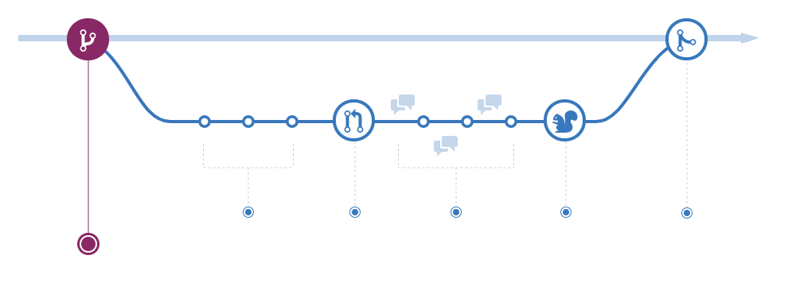

Version Control and Github
Why is version control important?
Why is version control important?
- Keep track of changes in your code
- Making changes with confidence, and even reverting when needed
- Relying on source control as the communication medium for your team
- Easily deploying different versions of your code
- Understanding who made a change and when it happened
Concepts
Concepts - Types of Version Control - Centralized
It works in a client-server relationship. It's easy to understand and you have more control over users and access

http://guides.beanstalkapp.com/version-control/intro-to-version-control.html
Concepts - Types of Version Control - Distributed
More powerful and detailed change tracking → less conflicts! No server is necessary. Git is an example of this type of version control.

http://guides.beanstalkapp.com/version-control/intro-to-version-control.html
Concepts - Tracking changes
A version control is mostly based around one concept:
Tracking changes that happen within directories or files
In most cases
- Specify which files/directories to keep track of
- The set of files or directories under version control are called a repository
Concepts - Committing
As you work with your files that are under version control, each change is tracked automatically!
- This can include:
- Modifying a file
- Deleting a file
- Adding files to repository
- Moving files
- etc ...
After each of these changes, you need to commit your changes
Concepts - Getting updates
As members of your team commit changes, it is important that you have the latest version → Reduces chance of conflict
You would do a git fetch followed by a git merge.
OR
You would need to do a git pull (= git fetch + git merge) to update.
Concepts - Diffing (or viewing the differences)
Since each commit is recorded as a change of a file or set of files, it is sometimes useful to view what changed between revisions.
Most versions controls let you compare two files to see which lines of code changed!
Concepts - Deleting files
If you have never added a file, you can just delete it normally.
If you did a git add atleast once then git rm filename.
If your file is being tracked and you want git to stop tracking it (but not delete it!) then do a git rm --cached filename.
Don't forget to commit these changes!
Concepts - Dot files
.gitconfig & .gitignore
.gitconfig contains setting that git will use. It is located in your home directory and applies to all your repos but you can override this by changing the config file for each repo stored in .git/config
.gitignore settings can also be set on an individual repo basis or on a global basis. It contains a list of files that git will ignore and not push to the remote repo.
Concepts - Branching
If you want to experiment with code that could break your repository, you could create a branch.
Concepts - Branching
Your local working directory always represents one branch.
To see the branches that exist: git branch
To create a branch: git branch branchname
To change your working directory to the new branch: git checkout branchname
Concepts - Contributing to an existing repository
If you want to implement changes in a big public source code repo then you want to fork it to make sure your changes don't break the code.
The forked repository is your independent copy which you should then clone.
Once you're done making changes locally, you need to submit a pull request to merge your changes back to the source repository.
If after forking you left your repo for a while and changes have been committed to the source code you will want to make sure you have the updated version. You can find instructions on doing that here: how do I update a github forked repository
Git commands
Git commands
Tipically, the git flow is:
git init- Initialized repositorygit add- Adds files and directories to repogit commit- Commits your changesgit push remote_repo_name branch_name- Push to your remote repository
There are other commands like: git clone, git merge, git status, git branch, git checkout , git pull and many more!
Git and Github
Git and Github
- Github is the platform that many people use to host their repositories.
- This repository is hosted on Github!
- You can use this along with the
cookiecutter Project template
Steps to create a repository
- Create a username and password
- Click on New repository"
- Fill in the details like name of repository, privacy settings, etc.
- To
cloneit locally, go to the directory (that will host the repository) using the Terminal - Copy and paste the commands on the screen to your Terminal window
- And now you have a local copy of your repository!!
Exercise
Create a project repository on Github and clone it onto your computer
Author -Your nameLicense -MITProject name -2020_Bootcamp_Github_repo
Github SSH Keys
Github SSH Keys
Now you will want to create SSH keys for your Github account
- First you need to create your key:
$ cd ~/.ssh
$ ssh-keygen -t rsa -b 4096 -C "your_email@example.com"
$ Generating public/private rsa key pair.
Enter file in which to save the key (/Users/calder/.ssh/id_rsa): github_key
Enter passphrase (empty for no passphrase):
Enter same passphrase again:
$ ls
github_key
github_key.pub
$ chmod 600 github_key*
$ mv github_key ssh_keys/
$ mv github_key.pub pub_keys
Github SSH Keys
- Now open
~/.ssh/config
open ~/.ssh/config
and add this to the file
## Connects to Github
Host github.com
HostName github.com
User git
IdentityFile ~/.ssh/ssh_keys/github_key
IdentitiesOnly yes
PreferredAuthentications publickey
Github SSH Keys
Follow the instructions on:
https://help.github.com/articles/connecting-to-github-with-ssh/
ls -al ~/.ssh
eval "$(ssh-agent -s)"
ssh-add ~/.ssh/ssh_keys/* # or ssh-add -K ~/.ssh/id_rsa if in Mac
And now test your connection
# Attempts to ssh to GitHub
ssh -T git@github.com
## You should see something like this
The authenticity of host 'github.com (IP ADDRESS)' can't be established.
RSA key fingerprint is 16:27:ac:a5:76:28:2d:36:63:1b:56:4d:eb:df:a6:48.
Are you sure you want to continue connecting (yes/no)?
## You should see this
Hi username! You've successfully authenticated, but GitHub does not
provide shell access.
You are now able to use git and Github!!
Back to main website: